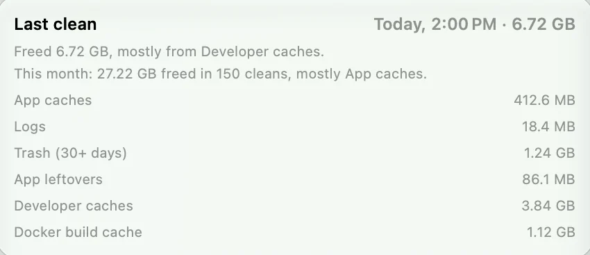
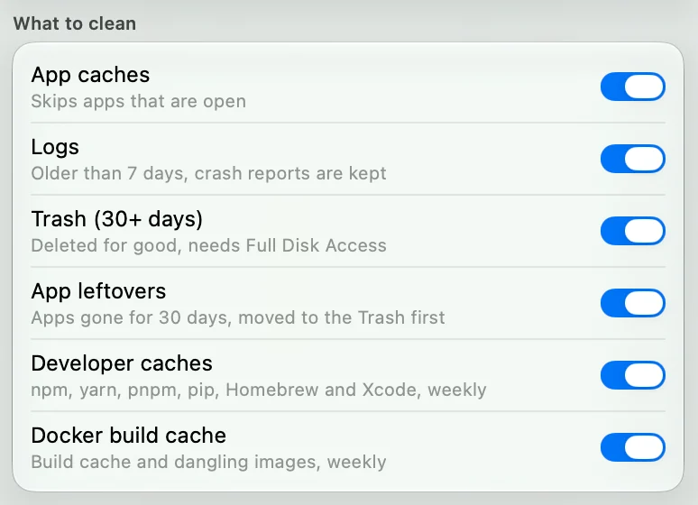
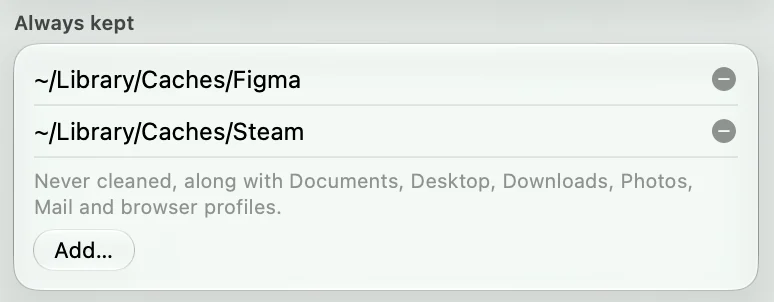

The six categories
| Category | Where | When it goes | How |
|---|---|---|---|
| App caches | ~/Library/Caches | Every clean, while the app is closed. A folder no installed app claims waits for 7 idle days. Apple’s caches stay. | Deleted |
| Logs | ~/Library/Logs | Older than 7 days. Crash reports are kept. | Deleted |
| Trash | ~/.Trash | In the Trash for 30 days. Needs Full Disk Access, and is skipped without it. | Deleted |
| App leftovers | Support files, caches, preferences and logs of removed apps | The app has been gone 30 days and its files are unused. Anything holding logins or cookies stays. | Moved to the Trash first |
| Developer caches | npm, yarn, pnpm, pip, Homebrew, Xcode DerivedData | Once a week. DerivedData waits until a project is 7 days idle. | Deleted |
| Docker build cache | Build cache and dangling images | Once a week, only when Docker’s data is on the internal disk. | Docker’s own prune |
How long things stay
Bars show the wait before each kind of file can go, on a 30-day scale.
- App caches, checked hourly
- Logs, 7 days
- Developer caches, weekly
- Trash, 30 days
- App leftovers, 30 days
Clean now also runs the weekly categories, whenever you press it.
One clean, itemised
Each run records bytes freed for every category. A typical hourly clean is small, because there is rarely much to clear. The weekly clean is the big one if you write code.
How much you get back depends on your Mac and your apps. Lightly shows the real figure after each run.

Switch off what you want
Keep your Docker cache. Leave the Trash alone. Each category has its own switch, and each switch tells you the rule behind it.
What it never touches
Keep one folder for good
Add a file or folder to Always kept and every clean skips it, including anything inside it.
